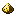
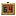

Рамка-индикатор
alaindustrial:stock_display_frame
Сводка
Рамка-индикатор (Stock Display Frame) — entity-рамка (наследник ванильной ItemFrame), которая вешается на любой контейнер — ванильный сундук/бочку/шалкер или модовый железный сундук — и в реальном времени показывает на себе число предметов внутри. Энергии не требует: это quality-of-life-фича для склада — «ценники» на рядах сундуков, наполнение видно без открытия GUI. Правило счёта (конвенция жанра — AE2 Storage Monitor, Refined Storage; финализировано плейтестом 2026-07-12): в рамке лежит предмет → число = сколько предметов этого типа в контейнере (фильтр); рамка пустая → число не отображается (пустая рамка выглядит как обычная; серверный счёт «всего содержимого» при этом продолжает считаться — его использует компаратор); за рамкой нет контейнера → число не отображается; контейнер пуст (при фильтре в рамке) → отображается 0. Считаются только слоты верхнего уровня — без рекурсии в шалкеры/бандлы внутри сундука. Двойной сундук считается как один объединённый контейнер (через ChestBlock.getContainer), рамка на любой половине показывает общую сумму.
Механика
Размещение и снятие
Предмет рамки ставится правым кликом на боковую грань блока (ванильный placement ItemFrameItem.useOn — hanging entity, только горизонтальные грани + низ/верх как у ванили). Рамка «выживает» по ванильным правилам HangingEntity.survives: сломали опорный блок — рамка отваливается и дропает свой предмет (getFrameItemStack переопределён — не ванильную item frame). Удар по заполненной рамке выбивает предмет-фильтр (первый удар), второй удар снимает рамку — ванильное поведение унаследовано.
Взаимодействие (ПКМ)
Отличается от ванильной рамки — поворота предмета нет (для фильтра это шум):
| Состояние рамки | ПКМ с предметом в руке | ПКМ пустой рукой |
|---|---|---|
| Пустая | положить предмет-фильтр (1 шт.) → появляется число | ничего |
| С фильтром | вынуть фильтр обратно игроку → число исчезает | вынуть фильтр обратно игроку → число исчезает |
Карты (minecraft:filled_map) в рамку класть нельзя (вся ванильная map-спец-логика не задействуется; фильтровать карты в сундуке бессмысленно).
Счёт содержимого (server-side)
Раз в stockFrameScanIntervalTicks (по умолчанию 20 тиков = 1 с, C) рамка сканирует блок за собой: getPos.relative(getDirection.getOpposite). Перед чтением — guard level.isLoaded(targetPos): сундук может оказаться в незагруженном чанке при загруженной рамке; синхронную подгрузку чанков не провоцируем. Определение контейнера: блок ChestBlock → ChestBlock.getContainer(...) (объединяет double chest); иначе BlockEntity instanceof (покрывает бочку, шалкер, и любые сторонние контейнеры). Сумма ItemStack.getCount по слотам; при фильтре — только стеки, совпадающие с предметом-фильтром по типу и компонентам (ItemStack.isSameItemSameComponents). Результат — синхронизируемое поле DATA_COUNT (SynchedEntityData, int; -1 = «нет контейнера»). Запись только при изменении значения — dirty-данные уходят на клиент немедленно, независимо от updateInterval` энтити.
Отображение числа (client-side)
Число рисуется плоско на лицевой плоскости рамки, в её нижней полосе — идиома текста табличек (SubmitNodeCollector.submitText + scale(s, −s, s), как AbstractSignRenderer). Текст повёрнут вместе с рамкой (не биллборд); белый с чёрной обводкой, без подложки. Готча координат: локальное пространство рамки повёрнуто на 180° вокруг Y относительно «текстового» пространства таблички (+z смотрит В стену) — перед текстом нужен доворот YP(180°) и вынос +0.03 к зрителю, иначе цифра оказывается за задником лицом в стену. Константы (StockDisplayFrameRenderer): TEXT_SCALE = 0.02 (глиф 8px → 0.16 блока), TEXT_Y = −0.17 (центр цифры ниже центра рамки), ITEM_RAISE = 0.08 + ITEM_SCALE_WITH_COUNT = 0.4 — предмет-фильтр приподнят и уменьшен (0.5 → 0.4), освобождая нижнюю полосу; без фильтра рамка рендерится как ванильная (предмет по центру, масштаб 0.5). Дистанция показа — до 24 блоков (дальше текст скрывается, FPS-практика storage-модов). Форматирование: точное число до 10 000, дальше сокращение — 12.3k, 1.2M. Пустая рамка или «нет контейнера» (-1) — текст не рендерится вовсе.
Редстоун
getAnalogOutput переопределён: компаратор читает заполненность контейнера за рамкой по ванильной формуле контейнеров (AbstractContainerMenu.getRedstoneSignalFromContainer — та же кривая 0–15, что у компаратора на самом сундуке), а не ванильную frame-rotation (rotation у этой рамки всегда 0 и дал бы бессмысленную константу). Сигнал не зависит от фильтра — это заполненность всего контейнера. Нет контейнера / незагруженный чанк → 0.
Свойства блока
Рамка — не блок, а entity; «форма/коллизия» здесь — параметры hanging entity.
| Поле | Значение |
|---|---|
| Форма/коллизия | плоская настенная рамка 12×12×1 px (bounding box hanging entity 0.5×0.5×0.0625, как ванильная item frame); коллизии с сущностями нет |
| Поле | Значение |
| --------------------- | ---------- |
| Тип | entity alaindustrial:stock_display_frame, наследник ItemFrame |
| MobCategory | MISC |
| Размер | 0.5 × 0.5 (как ванильная рамка) |
| clientTrackingRange | 10 (как ванильная рамка) |
| updateInterval | Integer.MAX_VALUE (рамка не движется; синк счёта — через entity data) |
| Дроп | предмет alaindustrial:stock_display_frame (+ предмет-фильтр, если был) |
| Персистентность | ванильный NBT рамки (Item, Facing, …) через ValueOutput/ValueInput; счёт не персистится — пересчитывается после загрузки |
Рецепты
Крафт: data/alaindustrial/recipe/stock_display_frame.json Тип: minecraft:crafting_shaped, категория redstone. Pattern 3×3: GWG / SFS / GWG — G = alaindustrial:gold_dust, W = alaindustrial:wooden_gear, S = alaindustrial:silver_ingot, F = minecraft:item_frame (ванильная рамка в центре). Идея: обычная рамка «апгрейдится» точной механикой (шестерни) и драгоценной электрикой (золотая пыль + серебро) в считающую. Результат: 1 × alaindustrial:stock_display_frame. Recipe-unlock advancement (recipe_unlocked) — по получению wooden_gear ИЛИ silver_ingot (конвенция мода: без advancement рецепт не виден в книге рецептов).
Совместимость
Работает с любым блоком, чей BlockEntity реализует : ванильные сундук / trapped chest / медный сундук / бочка / шалкер, модовый железный сундук, контейнеры сторонних модов. Не считает инвентари, доступные только через Transfer API / capability без (осознанное упрощение v1). Хопперы/трубы не взаимодействуют с рамкой (entity).
Тестирование
Gametests (общий сценарий common/.../gametest/StockDisplayFrameS, Fabric-сьюта + регистрация в NeoForgeGameTests): рамка на сундуке с 5 алмазами, пустая рамка → счёт 5; фильтр-алмаз при алмазах+железе в сундуке → счёт только алмазов; double chest → сумма обеих половин; добавление предметов в сундук → счёт обновился в течение интервала скана; рамка на не-контейнере → счёт −1; поломка рамки → дроп предмета stock_display_frame` (не ванильной рамки).
Прогрессия
LV-тир: доступна после первых шестерён и серебра (крафт: ванильная рамка + wooden_gear ×2 + silver_ingot ×2 + gold_dust ×4).
Связанное
Железный сундук — основной «клиент» рамки в моде. Ванильные minecraft:item_frame / minecraft:glow_item_frame — прародитель механики.
Крафт
Крафт на верстаке
item fr
Рамка-индикатор